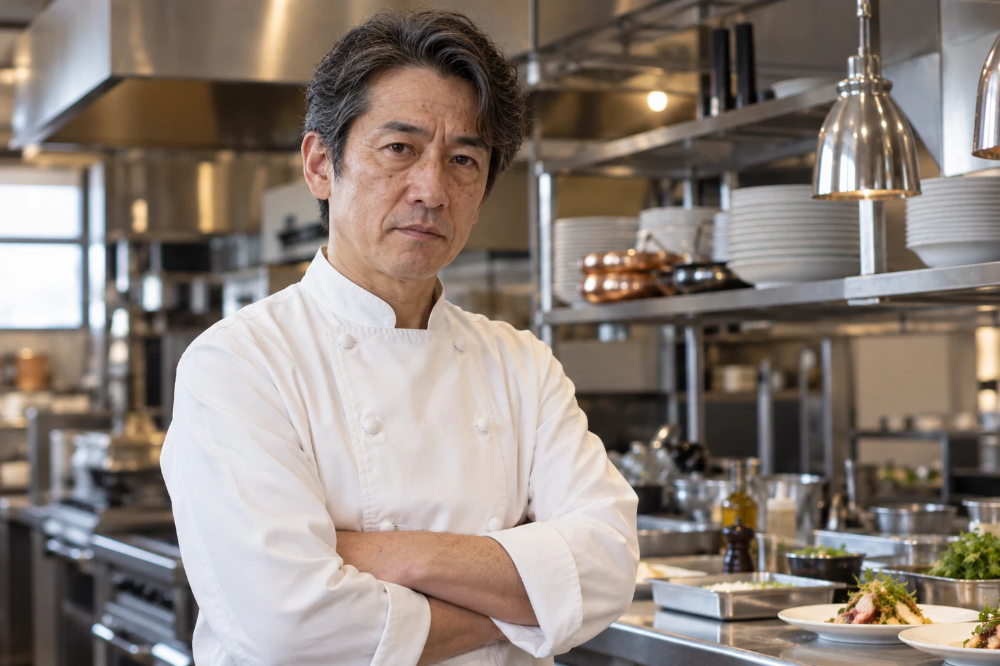
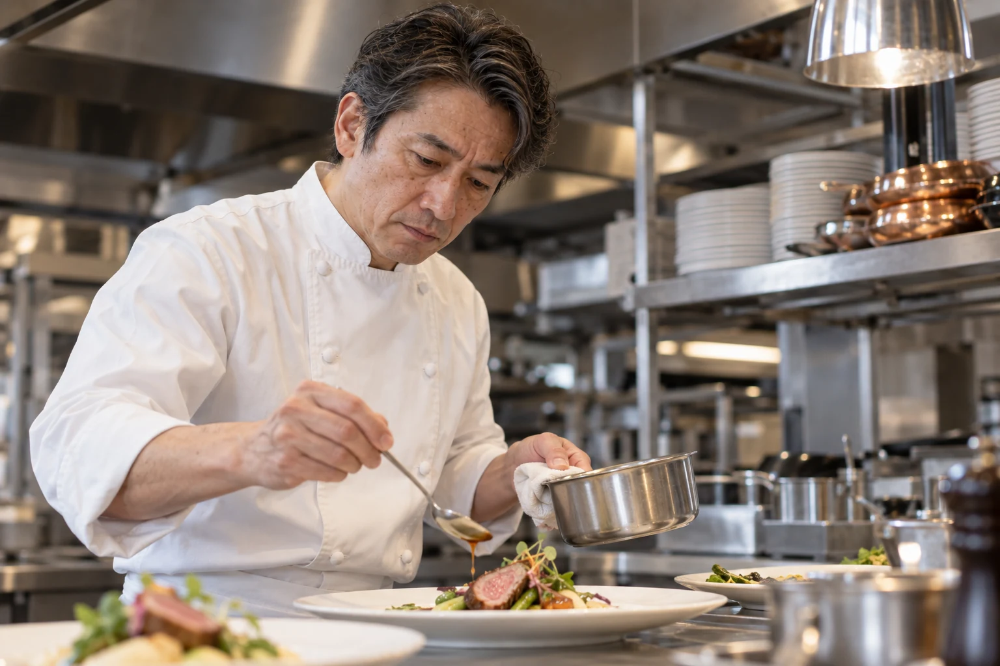

Chef
シェフ紹介
ひと皿に向き合う、L'ORNEVIERの料理人をご紹介します。

Reiji Sakakihari
シェフ榊玻璃 玲司
さかきはり れいじ
季節の移ろいと食材の声に耳を澄ませ、その日にふさわしい味わいを一皿へ映すことを大切にしています。
食べる方の時間に静かに寄り添い、料理を囲んだ記憶まで豊かにすること。それが、L'ORNEVIERの料理の原点です。
Philosophy
食事を終えた後にも、
記憶に残るひと皿を
味だけではなく、その時間がもたらす喜びを大切にしています。香りや温度、食感の重なりを丁寧に整え、ひと口ごとに季節を感じられる料理を目指します。
大切な方と交わした言葉まで、幸福な記憶として残っていくように。目の前の一皿へ、静かに心を尽くします。
